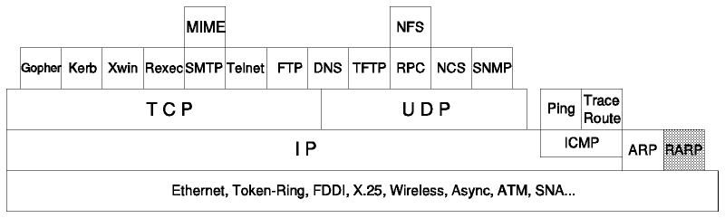

Table of Contents
Table of Contents  Proxy-ARP
Concept
Proxy-ARP
Concept
TCP/IP Tutorial and Technical Overview

Figure: Reverse Address Resolution Protocol (RARP)
The RARP protocol is a network-specific standard protocol. Its status
is elective.
Some network hosts, such as diskless workstations, do
not know their own IP address when they are booted. To determine their own IP
address, they use a mechanism similar to ARP (Address Resolution Protocol), but
now the hardware address of the host is the known parameter, and the IP address
the queried parameter. It differs more fundamentally from
ARP in the fact that a "RARP server" must exist on the
network which maintains a database of mappings from hardware address to
protocol address.
The reverse address resolution is performed the same
way as the ARP address resolution. The same packet format (see
Figure - ARP Request/Reply Packet) is
used as for ARP.
An exception is the "operation code" field which now takes the following
values:
-
3
- for the RARP request
-
4
- for the RARP reply
And of course, the "physical" header of the frame will now indicate RARP as the
higher-level protocol (8035 hex) instead of ARP (0806 hex) or IP (0800 hex) in
the EtherType field. Some differences arise from the concept of RARP
itself:
- ARP only assumes that every host knows the mapping between its own hardware
address and protocol address. RARP requires one or more server hosts on the
network to maintain a database of mappings between hardware addresses and
protocol addresses so that they will be able to reply to requests from client
hosts.
- Due to the size this database can take, part of the server function is
usually implemented outside the adapter's microcode, with
optionally a small cache in the microcode. The microcode
part is then only responsible for reception and transmission of the RARP
frames, the RARP mapping itself being taken care of by server software running
as a normal process in the host machine.
- The nature of this database also requires some software to create and
update the database manually.
- In case there are multiple RARP servers on the network, the RARP requester
only uses the first RARP reply received on its broadcast RARP request, and
discards the others.
Table of Contents  Ports
and Sockets
Ports
and Sockets